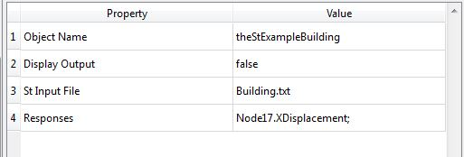

St Model
Class Name
Location in Objects Pane
- Models > Model > Infrastructure > St
Model Description
Model Form
- This is a 3D linear elastic structural analysis program with truss, frame, and 2D element.
- All elements can be placed in any orientation in space.
- For more details, please see the webpage on St linked at the Rtx page.
DDM sensitivities
Properties

Object Name
- Name of the object in Rt
- Allowable characters are upper-case and lower-case letters, numbers, and underscore (“_”).
- The name is unique and case-sensitive.
Display Output
- Determines whether the model is allowed to print messages to the Output Pane
- St Input File = the absolute path to the structural model.
- This file should be pre-checked by running St first.
- A note on the use of Parameters: In St the Constant Parameter is available and can be used to give the value of material, geometry, and load variables.
- When running the structural analysis as a model in Rt, these input parameters can be random variables, decision variables, or even responses from other models.
- To do this, create those parameters in Rtx BEFORE you give the St Input File path. Use the same names of the random variables, etc as the parameter names used in the St input file.
Responses
Output
- Response objects corresponding to the list provided in the last item of the input
- The output is an automatically generated generic response object, which takes the object name of the model plus “Response”.
Right-click Menu
Remove
Display